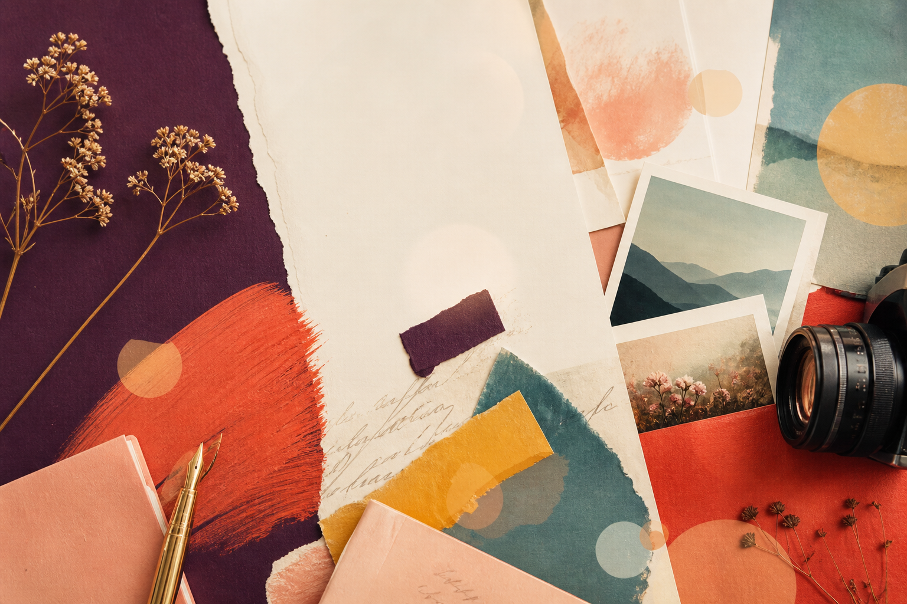

Featured essay
Begin with a first note
A flexible spot for a personal essay, a trip reflection, a project update, or anything you want visitors to read first.
Open draftPersonal notes, essays, and photographs
Use this space as a living notebook: longer writing, photo sets, quick observations, and the pieces that feel worth returning to.

Blog
Featured essay
A flexible spot for a personal essay, a trip reflection, a project update, or anything you want visitors to read first.
Open draftJournal
Short entries, loose thoughts, lists, and links can live here without needing to become full essays.
Open draftNotes
Keep a running record of ideas, places, books, recipes, images, and moments worth saving.
Open draftPhotography
01
02
03
04
About
This is a from-scratch starting point: warm colors, clear sections, and placeholders that can become real writing and real photographs over time.
Email me